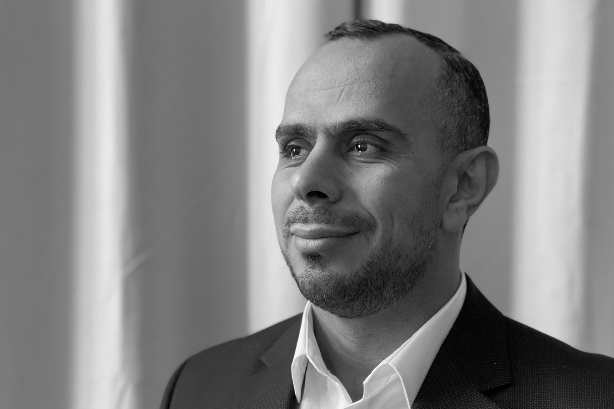

Ahmad Rushdi

Research Initiatives Manager
Institute for Human-Centered Artificial Intelligence (HAI)
Interests: Signal Processing, Uncertainty Quantification, and Machine Learning

Bio
Thanks for visiting my webpage. I am currently a Research Initiatives Manager with Stanford’s Institute for Human-Centered Artificial Intelligence.
I have previously held R&D and management positions at the Center for Computing Research of Sandia National Laboratories in Albuquerque NM, Northrop Grumman Corporation in Albuquerque NM, the Department of Electrical and Computer Engineering of UC Davis in Davis CA, the Computational Visualization Center under Oden Institute for Computational Engineering and Sciences at UT Austin in Austin TX, and Cisco Systems in San Jose CA.
Selected Publications
A brief review on DNA storage, compression, and digitalization
Nano Communication Networks, 31, 2022
Yesenia Cevallos, Tadashi Nakano, Luis Tello-Oquendo, Ahmad A. Rushdi, Deysi Inca, Ivone Santillán, Amin Zadeh Shirazi, Nicolay Samaniego
paper
Multifidelity data fusion in convolutional encoder/decoder assembly networks for computational fluid dynamics
AIAA SciTech, 2022
Lauren Partin, Ahmad A. Rushdi, Daniele E. Schiavazzi
paper
SAGE Intrusion Detection System: Sensitivity Analysis Guided Explainability for Machine Learning
SAND Technical Report, 2021
Michael R. Smith, Erin C.S. Acquesta, Arlo Ames, Alycia N. Carey, Christopher R. Cuellar, Richard V. Field, Trevor Maxfield, Scott Mitchell, Blake Moss, Elizabeth Morris, Megan Nyre-Yu, Ahmad A. Rushdi, Mallory Stites, Charles Smutz, Xin Zhou
report
CSRI Summer Proceedings
SAND Technical Report, 2020
Ahmad A. Rushdi, Michael L. Parks
report
VoroCrust: Voronoi Meshing Without Clipping
ACM Transactions on Graphics, 39(3), 2020
Ahmed Abdelkader, Chandrajit L. Bajaj, Mohamed S. Ebeida, Ahmed H. Mahmoud, Scott A. Mitchell, John D. Owens, Ahmad A. Rushdi
paper
VPS: Voronoi piecewise surrogate models for high-dimensional data fitting
Int. Journal for Uncertainty Quantification, 2017
Ahmad A. Rushdi, Laura P. Swiler, Eric T Phipps, Marta D’Elia, Mohamed S. Ebeida
paper
Map-invariant spectral analysis for the identification of DNA periodicities
EURASIP J Bioinformatics and System Biololgy, 2012(1):16
Ahmad A. Rushdi, Jamal Tuqan, Thomas Strohmer
paper